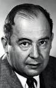
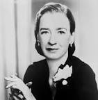

Історія обчислювальної техніки багата на визначні постаті, які внесли вагомий вклад у її розвиток. Ось кілька ключових особистостей у цій галузі:

Чарльз Беббідж (1791–1871):Відомий як "батько комп'ютера", Беббідж був англійським математиком і винахідником. Він створив концепцію Аналітичної машини, у якій можна було зберігати і виконувати інструкції, що робить його підвищуваним родоначальником сучасного комп'ютера. |

Джон фон Нейман (1903–1957): Угорський математик і фізик, фон Нейман вніс значний внесок у теорію і архітектуру комп'ютерів. Його ім'я пов'язане з архітектурою фон Неймана, яка стала основою більшості сучасних комп'ютерів. |

Грейс Гоппер (1906–1992): Американська програмістка і математик, вона грає важливу роль у розробці перших високорівневих мов програмування, таких як COBOL. Також внесла значний внесок у розробку комп'ютерів UNIVAC. |
|---|
Ці постаті в історії обчислювальної техніки внесли суттєвий внесок у розвиток та еволюцію цієї галузі. Їхні ідеї та винаходи сформували фундамент для того, що ми маємо сьогодні в галузі обчислювальної техніки.